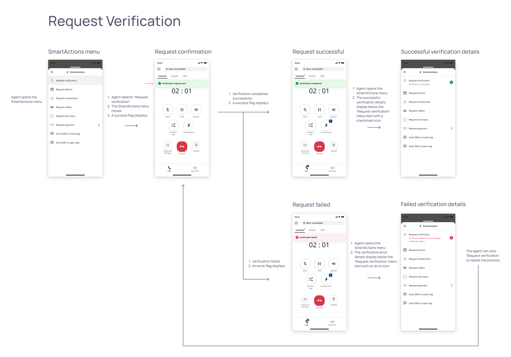
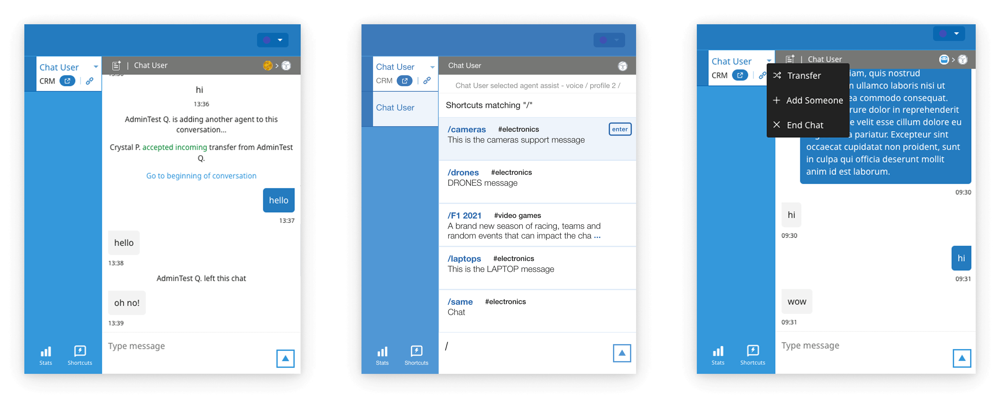
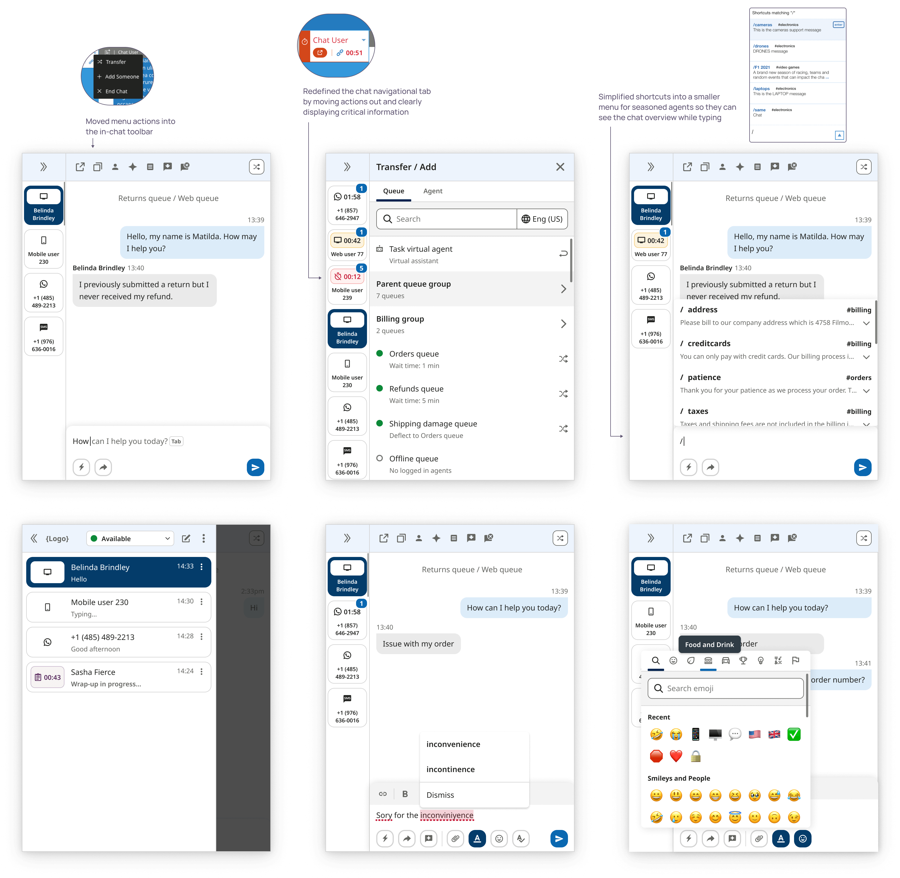
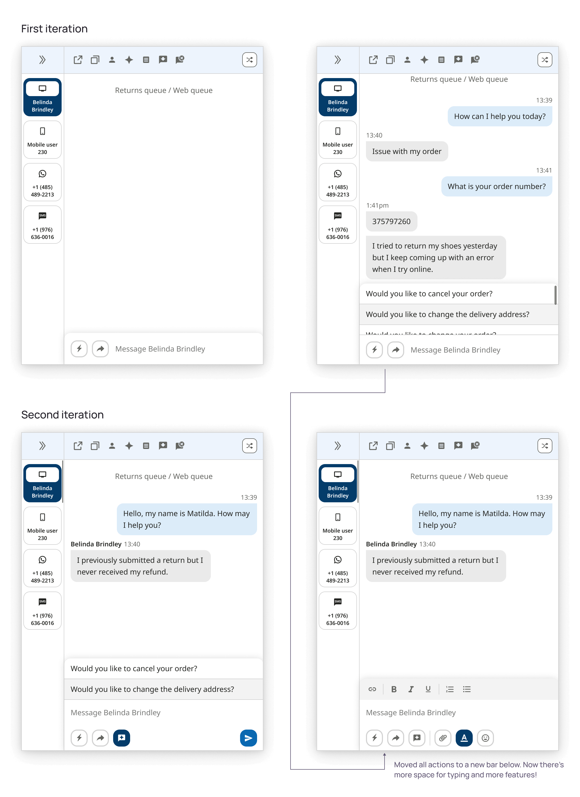
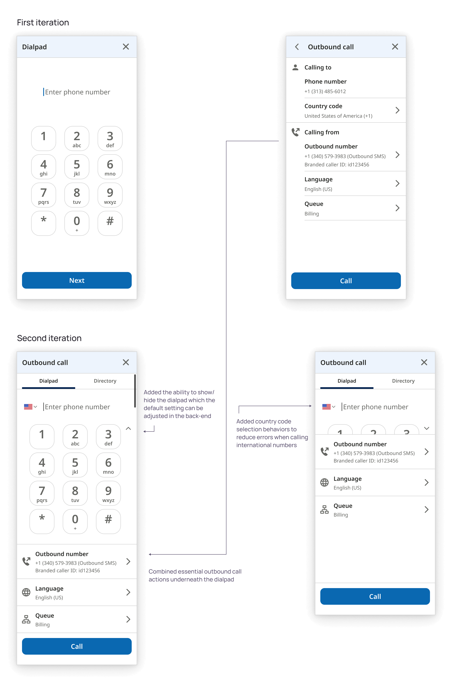

Previously, customer service agents were restricted to desktop computers during business hours at fixed locations. As demand for remote and flexible work increased, it became clear that agents needed a solution for those who are remote, in the field, or frequently on the move.

Mobile app screens with light and dark themes
Create a new mobile experience that consolidates critical Voice and Chat functionalities into a single platform while adapting complex workflows for mobile usability.
The Voice and Chat channels had traditionally existed as separate products. Merging them into one mobile experience posed new UX and technical hurdles.
Voice and Chat had complex multi-step workflows traditionally performed on desktops. Adapting desktop workflows into a simplified mobile experience without compromising essential features required additional refinement.
Complying with WCAG standards was a priority as part of the company's initiative to be inclusive. We needed to ensure all our users could perform their tasks without hindrance.
This was my first major project since I joined. The previous project user flows were missing essential information. As a result, a major challenge for me was understanding the business, users, and the existing features.
Speed was of the essence due to tight timelines. User research and testing weren't in scope as I had to deliver within 1-2 weeks for each feature. Since many features already existed on other platforms, I focused on refining and adapting those experiences for mobile with mobile accessibility as my guideline. Additionally, I expanded existing user flows to include detailed action steps, which helped improve communication and alignment across product, design, and engineering teams.

Request verification user flow
The legacy Chat platform had been extended with features over time, but without a cohesive strategy. This resulted in a cluttered, inefficient interface that made agent workflows slow and frustrating. It became clear that a full rethinking was necessary, not just a visual update but a structural one focused on unifying features and improving scalability for future enhancements. This was the first project I managed end-to-end as the design lead.
Redesign the Chat experience and structure that prioritizes agent efficiency to easily navigate between chats and interact with customers.
A fast-paced environment pushed a need a for all essential tools to be immediately accessible. Agents had difficulty finding the right tools efficiently. This posed a question on how to balance availability and maintaining a clean interface.
With a tool overload already in place, I needed to accommodate new features. The design needed to be scalable for ongoing growth without overwhelming users.

The current chat app design
I took the role as lead designer for this project, working with a quick timeline. Closely collaborating with the Product Manager, I questioned which features were most frequently used and prioritized by agents (the primary users). We identified these features and reserved their placement in the newly introduced in-chat toolbar. Previously these actions were located in the chat side navigation and were hidden under a menu. I proposed restructuring the navigation to only use it as a navigational tool and provide real-time data (response timer) on chat sessions. Relocating essential actions provided ample room for future enhancements and simplified the chat workflow.

Two major enhancements were introduced:
Foreseeing future growth, I realized the current chat input wouldn't properly support these enhancements. To support these changes, I redesigned the Chat Input UI and introduced a secondary toolbar. This allowed us to add features without crowding the main input area, maintaining a clean interface while preparing for future expansion. These updates were implemented across both the Web and Mobile apps, ensuring a consistent experience across platforms.

The Voice/IVR system is the most feature-rich and complex product in the suite. It also required a redesign and UX improvements. While my UI Director led this project, I contributed to design system implementation and helped maintain consistency with the rest of the platform ecosystem.

A customer encountered issues when dialing international numbers without entering the country code. Calling would end with errors or it would automatically input the wrong country code from settings. To solve this, I introduced a country code selector that recognized and auto-filled country codes even when typed manually. This improved both flexibility and efficiency.
Additionally, I consolidated a two-step dialing flow into a single screen, simplifying the experience based on user feedback. While a dial pad was used by only a small number of agents, I added a toggle to show or hide it based on user preference. Admins were given the ability to set default behaviors for their teams, allowing for greater customization and control.

Received positive feedback from customers on improved efficacy of agent workflows
Created a unified, scalable design system adopted across Mobile, Chat, and Voice platforms
Simplified complex workflows and reduced cognitive load across all platforms
Established a modern UX foundation that supports future product growth